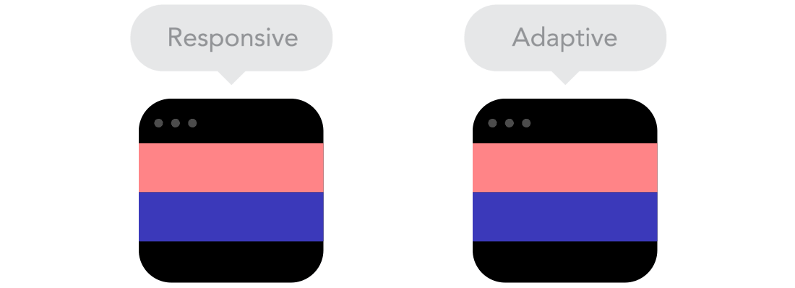
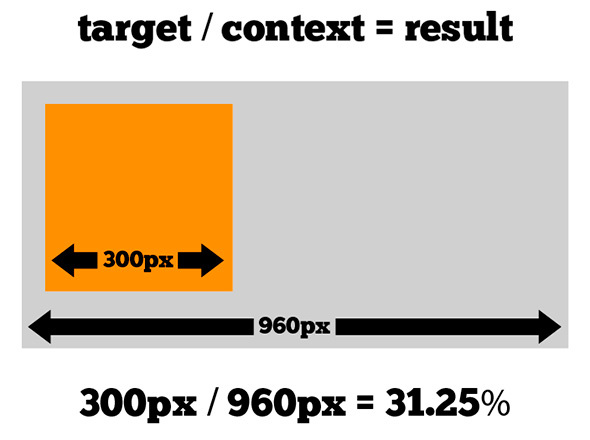
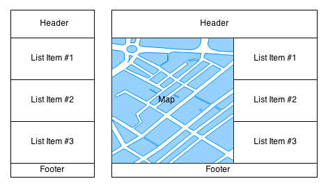

Модуль 8 - Теорія
Введення в Responsive вебдизайн
Раніше сайти були з фіксованим верстанням. Якщо сайт був завширшки 800 пікселів — він так і залишався 800 пікселів, однаково, що на великому чи крихітному моніторі. Такий підхід повністю застарів разом з табличним верстанням.
Потім сайти стали "гумовими". Якщо ми міняли розмір вікна браузеру — елементи стискалися або розтягувалися. Відкривали сайт на великому моніторі чи на маленькому, або на смартфоні — він скрізь мав симпатичний вигляд, змінювався тільки масштаб. Це було зручно користувачеві й мало гарний вигляд, але цей підхід теж застарів.
Більша частина трафіку в інтернеті використовується мобільними та планшетами, тому створення гнучких вебсайтів сьогодні є обов'язковим для розробника інтерфейсів.
Нові підходи до верстання
Зараз використовуються нові підходи при створенні вебсайтів. Вони поєднують в собі елементи "гумового" верстання і нові, сучасні прийоми: adaptive і responsive(кардинально відрізняються). Розберімось, що це таке.
Responsive
Сайт, який має декілька варіантів зображення, переходи між ними плавні, як на "гумі". Змінюєте розмір вікна — кнопки повільно міняють розмір, блоки плавно стискуються, а коли настає контрольна точка — сайт міняє розташування блоків під планшет або під смартфон.
Особливість: плавні переходи між ключовими варіантами зображення. Якщо сайт оптимізувався під iPad, то він також матиме гарний вигляд і на Galaxy Tab, і на будь-якому пристрої.
Adaptive
Сайт, який на моніторі має один вигляд, на планшеті — другий, а на смартфоні — третій. Міняється розташування блоків, розміри кнопок і полів, текстів. Навіщо? Щоб користувачеві було комфортніше користуватися сайтом: на кнопку легше тиснути пальцем, якщо вона велика, текст в метро легше читати, якщо він 20 пунктів, а не 14.
Особливість: сайт має всього декілька "варіантів зображення" залежно від ширини екрану або типу пристрою. На усіх планшетах буде один сайт, незалежно від розмірів їхніх дисплеї. Аналогічно, якщо міняти розмір вікна браузеру, то сайт мінятиметься "ривками", а не як на "гумових" сайтах.
Що краще?
Немає однозначної відповіді. Responsive верстання безперечно дорожче, бо довше робиться. Іноді достатньо просто "гумового" сайту. Іноді бізнес-завдання краще виконає окрема мобільна версія. Чи взагалі додаток замість сайту. Дедалі більше розробників віддають перевагу Responsive сайтам. Саме цей підхід ми розглядатимемо детальніше.
Responsive meta tag
Сторінки, адаптовані для перегляду на різних пристроях, повинні містити в розділі head метатег viewport. Він повідомляє браузеру, яким чином треба контролювати розміри й масштаб сторінки. Додамо в head, окрім усіх інших тегів, ще метатег viewport.
Отже, ширина вікна перегляду адаптуватиметься до ширини екрану пристрою width=device-width, забезпечуючи співвідношення 1:1 між пікселями CSS і апаратними пікселями пристрою initial-scale=1.0
Chrome DevTools для роботи з мобільним верстанням
Якщо перейти в режим DevTools і натиснути на іконку #1 , ми перейдемо в responsive режим, з'являться додаткові інструменти для роботи з responsive верстанням. Щоб вийти з цього режиму, знову натисніть на іконку #1.
Тепер ви можете змінювати ширину вікна браузеру, використовуючи регулятори #2 , простим розтягуванням, неначе ви розтягуєте або стискаєте вікно браузеру.
У групі #3 вказані поточні розміри ширини\висоти, а також деякі інші опції, які поки що нам не цікаві. Трохи нижче групи #3 розміщені регулятори швидкої зміни ширини екрану по стандартних точках перелому. Про них пізніше.
Філософія Responsive вебдизайну
Оскільки вебсторінку зараз можна відкрити на безлічі пристроїв і екранів, було потрібне розв'язання проблем зображення контенту. Філософія responsive вебдизайну побудована на декількох підходах і прийомах при верстанні. Розгляньмо їх детальніше.
Відносні одиниці
Сайт можна відкрити на ПК, мобільному телефоні тощо, при чому елементи інтерфейсу повинні дотримуватися пропорцій, задуманих дизайнером. Щільність пікселів також може мінятися, тому нам потрібні гнучкі одиниці, які працюють всюди. Нам підходять відносні одиниці, як-от відсотки. Отже, якщо вказати блоку ширину 50%, він завжди займатиме половину екрану. Так само на допомогу приходять rem і em для вказання ширини елементів інтерфейсу і відступів у відносних одиницях.
Правила responsive верстання
У цьому розділі ми познайомимося з методами, які застосовуються при responsive верстанні.
width в %
Отже, ширину блоків ми вказуємо не в px, а у відсотках. У такий спосіб, коли макет стискається на крихітному мобільному пристрої або розтягується через величезний екран, усі елементи в макеті змінюватимуть їх ширину відносно один до одного.
Щоб розрахувати пропорції для кожного елементу сторінки, ви повинні розділити цільовий елемент на його контекст. Нині кращий спосіб зробити це — спочатку відкрити макет в редакторові, як-от Photoshop. Завдяки високій якості макету, ви можете виміряти елемент сторінки й розділити його на усю ширину сторінки.
Наприклад, якщо ваш макет по ширині 960 пікселів, тоді це буде ваше "контейнерне" значення. Припустимо, що наш цільовий елемент — це якесь довільне значення, наприклад, 300 пікселів завширшки. Якщо помножити результат на 100, ми отримаємо процентне значення 31,25%, яке ми можемо застосувати до цільового елементу.
Якщо значення відсотків вийшло не цілим, ви набуваєте деякого значення з рухомою комою, не округлюйте значення! Остаточний зовнішній вигляд сторінки виграє від уявної надмірної математичної точності.
min і max width
Важливою частиною responsive дизайну є використання мінімальної/максимальної ширини контейнерів в пікселях (чи rem/em) і ширини в % для контенту усередині контейнерів. При responsive верстанні не може бути фіксованих ширин в пікселях навіть в обгорток (далі контейнер), може бути тільки максимальна/мінімальна ширина. Це зроблено для того, щоб контейнер розтягувався на 100% поточної ширини вікна браузеру, але не розтягувався понад максимальну ширину, вказану в макеті.
Приклад
Напишемо HTML контейнер для трьох колонок: лівої та правої бічної панелі й контентної частини. Вкажемо контейнеру display flex, і висоту 200px для наочності. Приміром, на макеті content - це обгортка шириною 960px. Зверніть увагу на max-width: 960px.
Тепер, приміром, на макеті ми відміряли ширину left і right sidebar по 240px. Замість того, щоб вказувати їм ширину 240px, ми рахуємо ширину у відсотках від загальної ширини container.
width = 240 / 960 = 0.25
Пам'ятаємо, що для отримання відсотків треба множити результат на 100.
width в % = 0.25 * 100 = 25%
Аналогічно ми можемо заміряти ширину content і вирахувати її. Припустимо, у нас вийде 50% для articles, усе інше, що залишилося, вільний простір.
Вийшло класичне "гумове" верстання. Тепер, якщо ви розтягуватимете або звужуватимете вікно браузеру, верстання підлаштовуватиметься під поточну ширину екрану. Ширина бічних панелей завжди буде рівна по 25% загальної ширини, articles 50%.
See the Pen core-module-8-responsive-width by GoIT ( @GoIT-fe) on CodePen.
margin
Горизонтальний margin для блоків вказується у відсотках. Якби по макету у нас були проміжки між articles і бічними панелями, і articles був би завширшки 46%, то ширина блоків мала б такий вигляд:
- articles - 46%
- left-sidebar - 25%
- right-sidebar - 25%
- articles лівий і правий margin був би по 2%
Разом зайнято 100% ширини content. Звичайно, якщо ми використовуємо Flexbox, то досить вказати justify-content: space-between, явно вказувати margin не потрібно. Проміжки між колонками все одно будуть по 2%.
Не забувайте, що горизонтальний margin у блоків вказується в % від ширини батька. Водночас горизонтальний margin в елементів блоку вказується в rem. Приміром, блок статей. Якщо горизонтальний margin між статтями вказується в %, то margin елементів усередині статті вказується в rem. Це не абсолютне правило, швидше хороша практика.
padding
На відміну від margin, в 99% випадків при responsive верстанні, вертикальний і горизонтальний padding вказується в rem\em.
Підсумуємо
Це чудовий підхід для створення responsive вебсторінки, але не все так просто. Коли ширина браузеру стає занадто вузькою, сторінка може сильно спотворюватися. Наприклад, складний макет з трьома колонками не дуже добре працює на невеликому мобільному телефоні. На щастя, responsive дизайн потурбувався про цю проблему, використовуючи медіазапити, про них пізніше.
Mobile-first vs Desktop-first responsive design
Перш ніж розбиратися з медіазапитами, поговорімо про відмінності між mobile-first і desktop-first підходами при responsive верстанні.
Desktop-first
Орієнтований на широкі екрани підхід, при якому стилі застосовуються спочатку до настільних пристроїв. Розширені стилі та перевизначення для менших екранів потім додаються в таблицю стилів через медіазапити.
Mobile-first
Орієнтований на вузькі екрани підхід, при якому стилі застосовуються спочатку до мобільних пристроїв. Розширені стилі й інші перевизначення для великих екранів потім додаються в таблицю стилів через медіазапити.
З багатьох причин, у тому числі тому що понад 50% інтернет-трафіку випадає на мобільні телефони, зараз у веброзробці використовують mobile-first підхід.
Медіазапити (Media Queries)
Медіазапити — це модуль CSS3, який дозволяє створювати responsive вебсайти, використовуючи різні правила стилів для різних пристроїв або типів носіїв. Залежно від цих правил вміст зображується відповідно до різних умов, наприклад розміру екрану, вікна браузеру або самого пристрою, а також орієнтації та роздільної здатності пристрою.
У загальному випадку медіазапит складається з ключового слова, що описує тип пристрою (необов'язковий параметр) і виразу, що перевіряє характеристики цього пристрою. З усіх характеристик найчастіше перевіряється ширина пристрою width. Медіазапит є логічним виразом, який повертає true або false.
Способи додавання медіазапитів
Є декілька способів додавання медіазапитів до сторінки, з'являлися вони послідовно, з розвитком responsive вебдизайну. Відрізняються лише в імплементації, результат роботи буде однаковий.
У HTML файлі
Створюється файл стилів і наповнюється css правилами. Потім він підключається до сторінки з допомогою тегу link, до якого додається атрибут media. Відзначимо, що сам файл стилів буде завантажений разом зі сторінкою, незалежно від ширини екрану пристрою, але стилі з нього застосуються, якщо виконаються умови media.
Усередині таблиці стилів
Створюється файл стилів, усередині якого, використовуючи спеціальну конструкцію @media, описуються стилі для певної ширини екрану. У прикладі, якщо ширина екрану 768px чи більше, колір лівої колонки зміниться.
У сучасній розробці значно частіше використовується цей метод. Ми прописуємо стилі елементам інтерфейсу під певні медіаправила, і вони застосовуються залежно від умов.
See the Pen core-module-8-media-basics by GoIT ( @GoIT-fe) on CodePen.
@media (rules) - використовується для застосування стилів на певних носіях, розмірах екрану тощо. Це дозволяє нам вказати різні варіанти дизайну залежно від розміру екрану. Потім сторінку можна оптимізувати та показувати абсолютно по-різному для мобільних телефонів, планшетів і різних розмірів вікон браузеру.
min-width vs max-width
Розберімося з min-width і max-width в rules у медіазапиту.
@media (min-width: 500px) - вказує, що стилі, які вказані усередині цього медіаправила, застосуються при мінімальній ширині екрану 500px і ширше.
@media (max-width: 500px) - вказує, що стилі, які вказані усередині цього медіаправила, застосовуватимуться від нуля до максимальної ширини екрану в 500px.
Логічні оператори
Логічним буде питання, а що робити, якщо я хочу щоб якесь css правило застосувалося тільки в діапазоні, приміром, від 400px до 800px? Чи навпаки, застосовувалося завжди, окрім діапазону 400px-800px? Для цього є логічні оператори. Ми розглянемо найпоширеніші.
Оператори and і not
and- зв'язує між собою різні умови. Код нижче зробить так, що ліва колонка забарвлюватиметься в жовтий колір в діапазоні 400px - 800px.not- дозволяє спрацювати медіазапиту в протилежному випадку. Ключове слово not додається в початок медіазапиту і застосовується до усього запиту.
See the Pen core-module-8-media-operators by GoIT ( @GoIT-fe) on CodePen.
Типи пристроїв
Що це за screen? Це один з типів пристроїв, всього їх 4. Цей параметр не є обов'язковим і необхідний для більш специфічного застосування медіаправила.
| Тип | Опис |
|---|---|
| all | Підходить для усіх типів пристроїв |
| Призначений для сторінкових матеріалів і документів, що переглядаються на екрані в режимі попереднього перегляду друку. | |
| screen | Призначений, насамперед для екранів кольорових комп'ютерних моніторів |
| speech | Призначений для синтезаторів мови. |
Характеристики носія
До характеристик медіаносія відносяться параметри пристрою, що перевіряються. Значення, які використовуються при вказуванні характеристик, є контрольними точками. Як-от max-device-aspect-ratio, max-device-width, min-width, min-resolution тощо.
Device Orientation
Якщо вам необхідно застосувати CSS залежно від орієнтації браузеру, вам допоможуть такі правила. Це може бути особливо корисним для мобільних пристроїв.
| Орієнтація | Правило |
|---|---|
| Горизонтальна (landscape) | @media screen and (orientation: landscape) {...} |
| Вертикальна (portrait) | @media screen and (orientation: portrait) {...} |
Pixel Ratio
Важливо мати на увазі, що піксель CSS не має бути таким же, як фізичний піксель. Хоча екран може фізично мати ширину 720 пікселів, браузер може фактично застосовувати CSS, припускаючи, що він має ширину 480 пікселів. Це зроблено для того, щоб стандартна вебсторінка з більшою ймовірністю підійшла під екран. В даному прикладі співвідношення пікселів дорівнює 1,5:1 (на кожен піксель CSS є 1½ фізичного пікселя). Стандартний настільний монітор матиме співвідношення пікселів 1:1 (один піксель CSS до кожного фізичного пікселя).
Це media застосується до екранів зі співвідношенням пікселів 2:1. Також можна використати min-device-pixel-ratio і max-device-pixel-ratio.
See the Pen core-module-8-pixel-ratio by GoIT ( @GoIT-fe) on CodePen.
Декілька медіаправил
Ви можете застосувати скільки завгодно правил @media, тому у вас може бути декілька різних дизайнів (макетів), залежних від розміру екрану.
Ці медіаправила змінюватимуть фон body залежно від ширини екрану.
See the Pen core-module-8-multiple-media by GoIT ( @GoIT-fe) on CodePen.
Отже, алгоритм запису медіаправила:
- Вказуємо @media і вираз перевірки ширини екрану пристрою
- Усередині media вказуємо css правило для селектора
- Усередині css правила вказуємо css властивості і їхні значення, які ми хочемо застосувати при цьому media
- Ми можемо застосувати скільки завгодно media у файлі стилів, головне стежити за виразами перевірки ширини екрану, щоб не було конфліктів.
- Усередині кожного media немає обмеження на кількість css правил, ми можемо написати скільки завгодно css правил для різних селекторів усередині одного media.
- css правила наслідуються. Це означає, правила, написані при
min-width: 480px, застосовуватимуться і приmin-width: 768px.
Як дізнатися, які медіаправила прописувати?
При складанні медіазапитів треба орієнтуватися на так звані переломні (контрольні) точки дизайну, тобто такі значення ширини області перегляду, в яких дизайн сайту істотно змінюється, наприклад, міняється положення елементів інтерфейсу. Для верстальника це ті точки, макети для яких йому надали.
Під кожну контрольну точку малюється окремий макет. Між контрольними точками, верстання має бути "гумовим". Щоб адаптувати дизайн сайту під різні пристрої, необхідно вказати різні стилі для різних роздільних здатностей екранів, використовуючи певні контрольні точки.
Поширені переломні точки
| Ширина | Пристрій |
|---|---|
| 320px | Мобільні телефони з вузьким екраном |
| 480px | Сучасні смартфони середнього\високого рівня |
| 768px | Планшети |
| 960px | Планшети з широким екраном |
| 1200px | Ноутбуки |
| 1440px | ПК |
Responsive images
Responsive images - зображення, які добре зображаються на пристроях з різними розмірами та роздільними здатностями екрану.
Уявіть зображення 1200x600 пікселів. Воно має відмінний вигляд на широкому екрані. Що буде, коли ми відкриємо нашу сторінку на телефоні або планшеті? Нічого хорошого, без додаткової роботи ширина зображення залишатиметься 1200px, з'явиться смуга прокрутки. Як щодо ваги зображення, чи дійсно потрібна картинка 1200x600 для телефону з екраном 320px?
max-width и height
Найпростіший спосіб створити responsive зображення, це вказати йому максимальну ширину в 100%. Якщо для властивості max-width встановлене значення 100%, зображення зменшуватиметься, якщо необхідно, але ніколи не розтягнеться понад 100% своєї оригінальної ширини.
Ще одним важливим моментом є властивість height. Йому необхідно вказати значення auto, щоб зображення зберігало пропорції при зміні своєї ширини.
Не забувайте, що тег img рядковий. Це означає, що у нього завжди буде проміжок як у будь-якого рядкового елементу. Завжди необхідно робити img блоковим.
Розгляньмо приклад, створимо контейнер для картинки, вкажемо йому min/max ширину. Картинці задамо responsive властивості. Тепер картинка завжди красиво заливатиме контейнер, змінюючи свою ширину залежно від ширини контейнера.
See the Pen core-module-8-responsive-image by GoIT ( @GoIT-fe) on CodePen.
Різні зображення для різних пристроїв
62% ваги веба — це зображення. Велике зображення може бути ідеальним на великому екрані комп'ютера, але марним на маленькому пристрої. Навіщо завантажувати велике зображення, коли ви все одно повинні його масштабувати? Щоб зменшити навантаження, ми можемо використати тег picture.

Атрибути srcset, sizes і тег source дозволяють нам виділяти декілька альтернативних джерел і роздавати кожному пристрою те зображення, яке краще всього йому підходить.
srcset- визначає набір зображень, які ми дозволяємо браузеру вибирати, і розмір кожного зображення. У нього через кому ми записуємо пари значень: url картинки і її ширину в пікселях (для srcset це w). Навіщо говорити браузеру, яка у картинки ширина? Це браузер, хіба він не знає розміри картинки? Знає! Тільки після того, як завантажить усі зображення. Якщо ж браузер знає інформацію про розмір картинок із самого початку, буде завантажена тільки та картинка, яка зараз потрібна.sizes- визначає набір умов середовища (наприклад, ширина екрану) і вказує, який розмір зображення краще всього вибрати, коли виконуються певні умови мультимедіа.source- тег, використовується в picture, має 2 атрибути: media і srcset, які в парі визначають медіаправило і зображення, яке буде показане при його виконанні.
Перш ніж ми подивимося приклади, ось декілька речей, які треба мати на увазі :
pictureвимагає, щобimgбув останньою дитиною. Безimgнічого не зображуватиметься. Це підвищує доступність, оскільки є тільки одне місце для альтернативного тексту, і воно чудово підходить для резервного вмісту в старих браузерах, які не підтримуютьpicture.- Сприймайте атрибути
sizesіsrcsetтегаpicture, як ті, що перевизначають атрибутsrcтегаimg. Старі браузери просто використовуватимутьimg src. - Список
srcsetіsizes- це підказка для браузерів, а не вказівка. Наприклад, пристрій з відношенням пікселів 1,5 може вільно використати зображення 1x або 2x, залежно від того, що він знає про свої можливості, мережу тощо. - Вираз
<img sizes="(max-width: 30rem) 100vw ...">означає, якщо цей медіазапит істинний, показати зображення з шириною 100vw. Перший відповідний медіазапит "перемагає", тому порядок джерел має значення.
See the Pen core-module-8-srcset-sizes-media by GoIT ( @GoIT-fe) on CodePen.
Стаття з прикладами, яку обов’язково потрібно прочитати.Mobile-first CSS
Коли ми говоримо про responsive вебсайти, термін mobile-first відразу спадає на думку. Для наших цілей нам насамперед цікава медіафункція min-width, яка дозволяє застосовувати конкретні стилі CSS, якщо вікно браузеру опускається нижче певної ширини, яку ми можемо вказати.
Медіазапити, що використовують min-width, надзвичайно корисні, коли справа доходить до написання responsive вебсайтів, оскільки це знижує складність коду. Проте запити мінімальної ширини не є панацеєю, іноді буває корисно додати запити max-width в таблицю стилів.
Розгляньмо приклад
У нас є 4 блоки на сторінці: хедер, список з трьох елементів, карта і футер. Додатково у нас є два допоміжні теги, container як загальна обгортка сторінки й content як обгортка для карти та списку. Ліворуч зображено їхнє розташування на телефоні. Праворуч — на ноутбуці. Як ви думаєте, в якому випадку потрібно буде написати менше css коду для позиціювання?
Згадаємо про потік документу. Блоки в документі усталено розташовуються зліва направо і зверху вниз. Думаю, ви вже здогадалися, що позиціонувати елементи на картинці ліворуч буде дуже просто. Оскільки у нас елементи блокові — досить написати html розмітку, і вони розмістяться один під одним. Плюсом буде те, що блокові елементи усталено займають 100% батьківської ширини, тому нам не треба в css вказувати явно ширину. Карти на вузькому екрані немає, тому можемо її сховати банальним display: none. У цьому полягає сила mobile-first css.
See the Pen core-module-8-mobile-first by GoIT ( @GoIT-fe) on CodePen.
Властивість min-width у container, це те значення ширини, нижче якого з'являтиметься смуга прокрутки. У сучасному вебі 320px - мінімальна допустима ширина екрану.
Зверніть увагу, спочатку навіть немає media, оскільки стилі пишуться для вузького екрана. Вже потім, при написанні стилів для ширших екранів, ми додаємо media.
Тепер, використовуючи mobile-first підхід, додамо стилі для ширшого екрана. Нехай це будуть 768px і ширше. Додамо відповідне media. Нам необхідно позиціювати карту і список поруч усередині content. Карту треба показати. Для прикладу дамо карті ширину 60%, а списку 40%. Коли верстатимете реальний макет, Ви рахуватимете ширину блоків в % по формулі, яку ми вивчили раніше.
Уявімо ситуацію, що ми почали верстання з ширшого екрана. Те, що ми писали в media, ми б написали без media, після чого на вужчому екрані нам би довелося в media перевизначати display:flex для content, flex-basis для списку, карти тощо. Думаю, ви вже бачите переваги mobile-first css.
Плюси mobile-first css
- Первинний css чистіший, оскільки нам допомагає потік документу і блокова модель при позиціонуванні елементів інтерфейсу
- Спадкоємство стилів від вузьких до широких екранів
- Мінімальне перевизначення стилів позиціонування
Та все ж, min-width при mobile-first не є панацеєю. Є завдання, рішення яких дуже елегантні при mobile-first верстанні. Досить додати max-width або гібрид min-width to max-width медіаправил.
За посиланням в додаткових матеріалах, ви можете наочно розібрати приклад такої ситуації, коли у нас є, приміром галерея, яка залежно від ширини екрану вміщує в рядок різну кількість елементів.